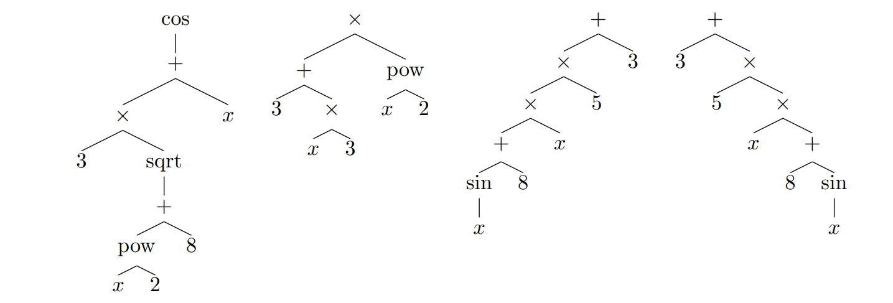
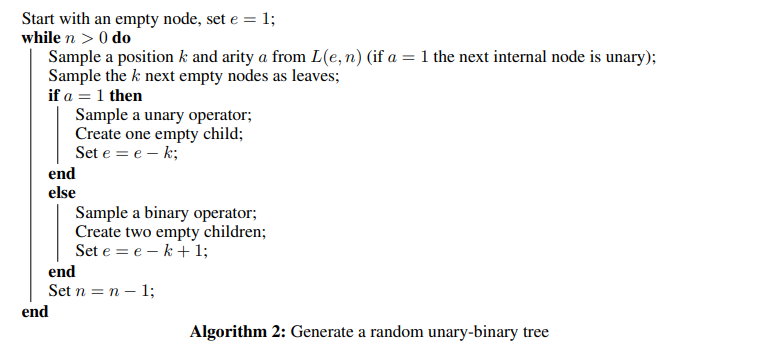

Modern large language models trained to do math such as Math GPT, ChatGPT, GPT-3 (fintuned for math) \& gpt-math can be fairly accurate and new models are being released every few months. However, there are still glaring issues when it comes to performing tasks that require accurate multistep reasoning. For example ChatGPT still can't adequately awnser non-standard 1st year college Physiscs questions and still somtimes gets middle school level math problems wrong. Moreover, I will demonstrate later that MathGPT seems to struggle with non-statndard integration. Hence, there is a growing opportinity to create a large language model that can accurately reason about mathematical symbols even if it is at the cost of having the model explain its resoning in plane english.
The solution: Simulation. Simulating millions of randomly generated equations is somthing researcher Francois Charton did to train transformers that outperform highly specilised software such as Mathematica, Maple and Matlab in terms of accuracy and speed. Charton and others over the years demonstrated the effectiveness of transformers at solving several elaborated tasks in mathematics. Tasks such as,
- symbolic integration and solving differential equations (https://arxiv.org/pdf/1912.01412.pdf)
- basic matrix operations, eigenvalue decomposition, matrix inversion (https://arxiv.org/pdf/2112.01898.pdf)
- properties of differential systems, such as local stability, behavior at infinity and controllability (Charton, Hayat, & Lample (2021))
- recurrence relation prediction from sequences of integers or floats (https://arxiv.org/pdf/2201.04600.pdf)
In this post we will show how to generate random equations in Python as shown in Lample & Charton, (2019) and argue why generation in this manner is the best way to teach languae models symbolic mathematics.
Tree generation
Simulation of millions of equations is made possible through the use of trees. First one may think to feed an equation to a model in left-to-right format, as in the case with English or similar laguages. However, naive approach does not take into account for complex equation structures that can be introduced by parentheses. Indeed, Hahn (2019) demonstrated "theoretical limitations of the computational abilities of self-attention, finding that it cannot model periodic finite-state languages, nor hierarchical structure" where these types of strucures can arrise through the use of bracketing and parentheses. However, the use of trees eliminates the need for parentheses and ensures the proper order of operations, making the mapping between expressions and trees one-to-one. Where here we represent mathematical expressions as trees with operators, functions, and variables represented as nodes. If we can "flatten" a tree structure of an equation to a 1d sequence then we can think of mathematical problems as transforming one expression into another, in a manner similar to machine translation.
Unary-Binary Trees
In practice, what we are randomly generating are what are called unary-binary trees. Where non-leaf nodes are operators/functions that act on one argument (unary) or two (binary). Examples of binary operations include addition and subtraction and examples of an unary operatios include sin, cos and logarithim. Sparing the theoritical details, we will outline the algorithim below.
Reccursive Difinition
Let $D(e, n)$ be the number of subtrees with $n$ internal nodes that can be generated from $e$ empty nodes. Here we are sampling from a set of $L$ leaves (e.g. variables, constants) alongside a set of internal nodes composed of $p_1$ urnary operators and $p_2$ binary operators. Hence we define $D$ as:
- $D(0,n)=0$
- $D(e,0)=L^e$
- $D(e,n)=LD(e-1,n)+p_1D(e,n-1)+p_2D(e+1,n-1)$
The third equation states that with $e > 0$ empty nodes, the first one will either be a leaf ($LD(e − 1, n)$ possible trees), a unary operator ($p_1D(e, n − 1)$ trees), or a binary operator ($p_2D(e + 1, n − 1)$ trees).
Next, we define the distribution of which we are samling from, $L(e,n)$. Where $P(L(e,n)=(k,a))$ is the probability that the next internal node is in position $k$ and has arity $a\in\{1,2\}$ (i.e. urnary or binary). Namely, $$P(L(e,n)=(k,1)):=\frac{L^eD(e-k,n-1)}{D(e,n)}, P(L(e,n)=(k,2)):=\frac{L^eD(e-k+1,n-1)}{D(e,n)}.$$ Finaly we can understand the pseudocode for Unary-Binary equation generation.
The Equation Space Size
Here we provide a way to count of the number of equations that can be genereated this way. As a quick reminder, we are sampling trees of $L$ possible leaves (integers or variables) and $n$ possible internal nodes composed of $p_1$ possible urnary operators and $p_2$ possible binary operators. Then, the count as a function of $n$ is given by,
- $E_{0}=L$
- $E_{1}=(p_1+p_2 L)L$
- $(n+1)E_n=(p_1+2p_2 L)(2n-1)E_{n-1}-p_1(n-2)E_{n-2}$
Consider for example that we want to sample random equations with the functions: $\{\times, +, -, 1/x, \sin(x), \cos(x), \log(x), \sqrt x, x^2, x^3, x^4\}$, using the variables $x$ and $y$ and, using constants in the range -5 to 5. In this scenario he haveS $L=12,p_1=8, p_2=3$, hence the the number of functions with $n$ operators $E_n$ is given by:
- $E_{0}=12$
- $E_{1}=528$
- $(n+1)E_n=80(2n-1)E_{n-1}-8(n-2)E_{n-2}$
Taking a few examples we get see: $E_{10}=2.31\cdot10^{21}$ and $E_{20}=9.46\cdot 10^{42}$, where $n<20$ for pratical applications.
Drawbacks
In the works mentioned, a unique large language model is trained and developed for each task. Hence, these models cannot generate valid output for tasks it is not trained on, unlike MathGPT for example. Moreover, these models are not trained to explain the reasonings that undergird their output solutions. This is indicative of the explainability vs. accuracy discussion in the context of simple regression/classification, where instead explainability is referring to language models literally giving explanations in plane English.
Conlusions
Here I presented a couple of points arguing why equation generation with trees is the best way to train models. Firstly, we avoid having to deal with the potentially complex and hierarchical structure introduced by parentheses. Secondly, show the computation of the exceptionally large equation space size which certainly dwarfs any online dataset of symbolic mathematics generated by humans. Generating enables models to learn from a much more diverse and uncommon set of equations and allows us to scale model capacity beyond current baselines.
References
[1]Charton, F., Hayat, A., & Lample, G. (2021). Learning advanced mathematical computations from examples. International Conference on Learning Representations.
[3] Lample, G., & Charton, F. (2019). Deep Learning for Symbolic Mathematics. ArXiv, abs/1912.01412.